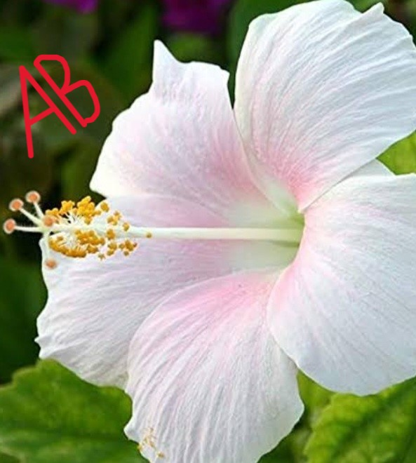
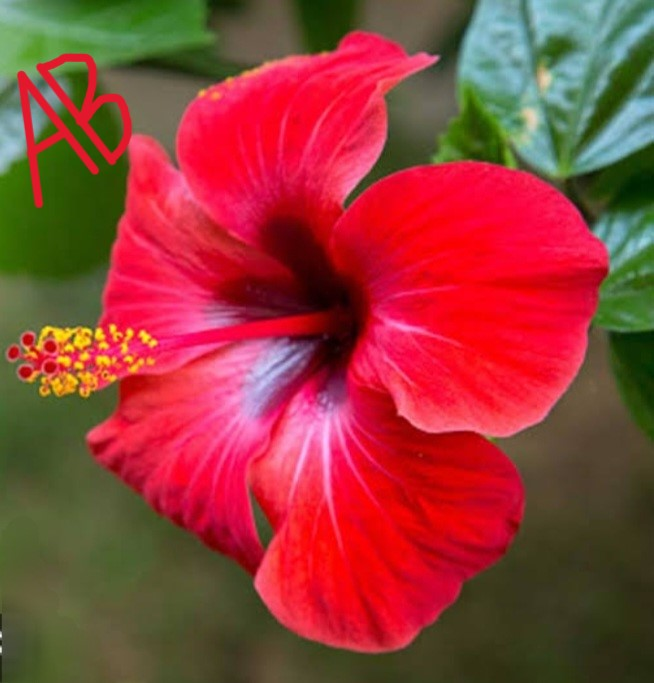
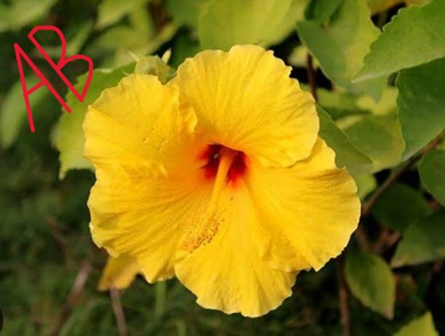

Native to warm-temperate,subtropical and tropical regions,the genus hibiscus includes both woody shurbs and small trees as well
as herbaceous plants.The large,trumpet-shaped flowers have five or more petals and come in range of colors including-white
,pink,red,orange and yellow.


